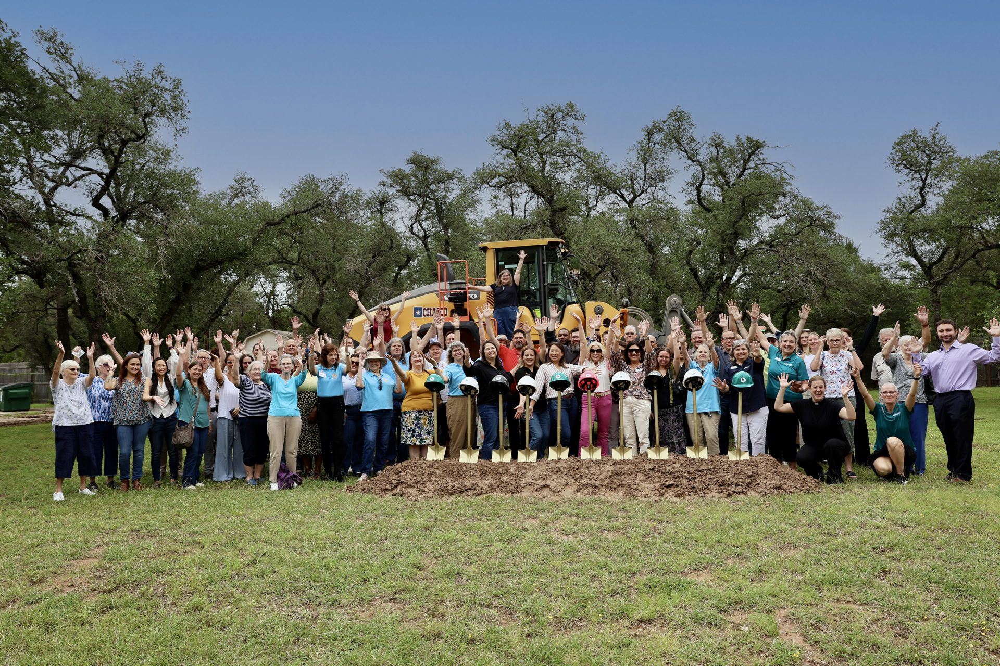
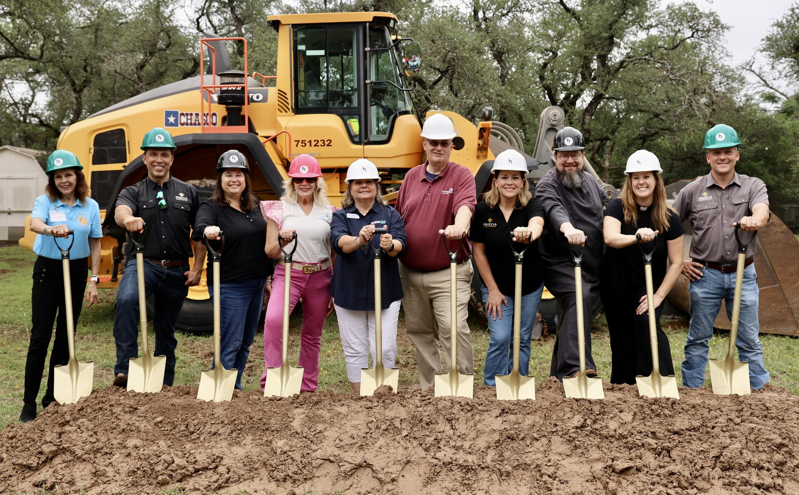
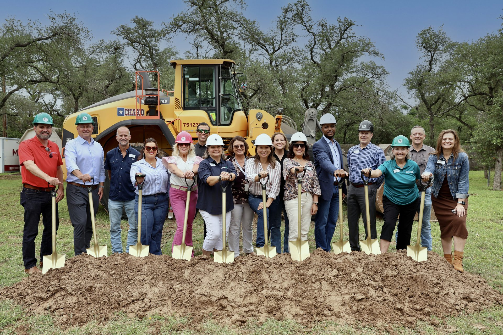
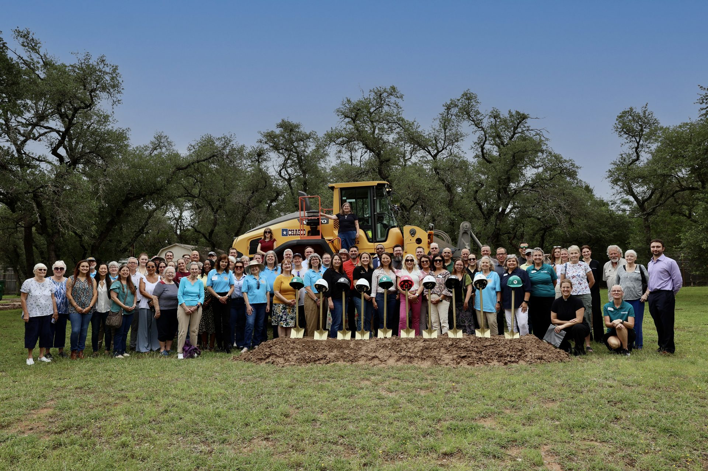
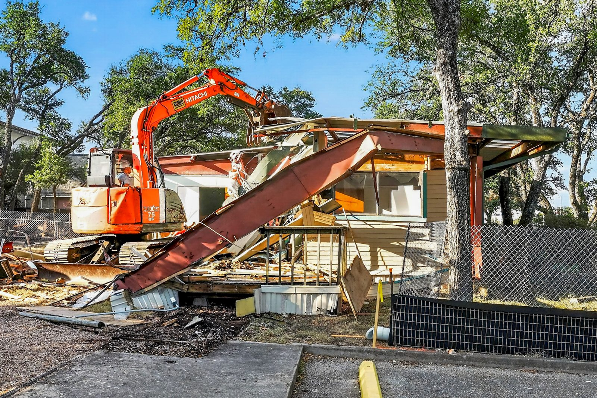
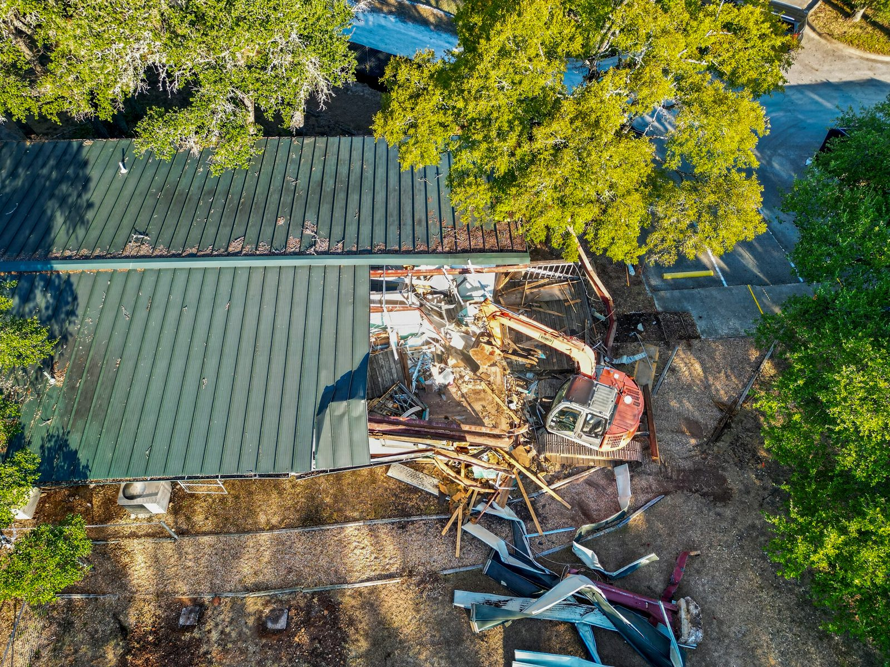
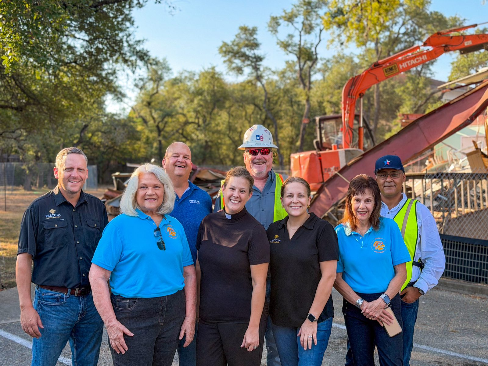
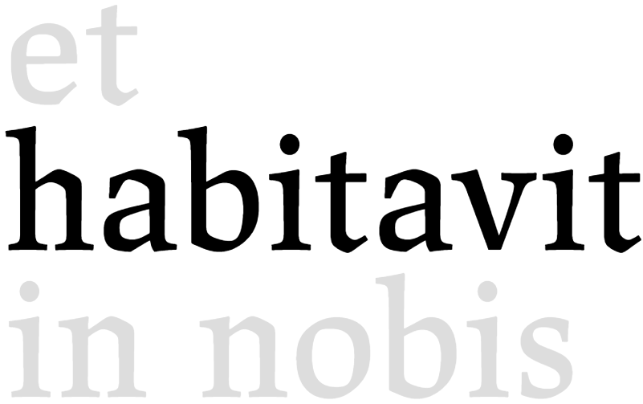
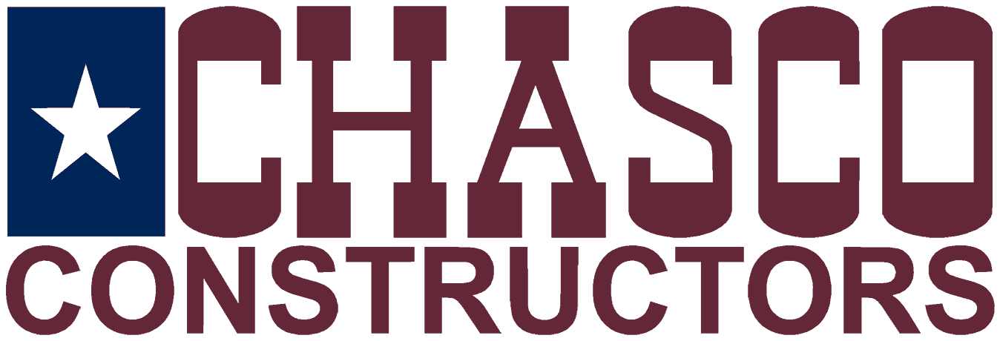

Community · Transitional Housing
Peace Lutheran & HomeAid Austin · Austin Metro, TX

In Austin, shelters are often divided into men's and women's facilities, which forces families apart at their most vulnerable moments. The Peace Family Housing Project changes that. It is a transitional home where families stay together while they work toward stable, long term housing.
On June 9, 2026, Freccia Construction joined Peace Lutheran Church, HomeAid Austin, and the Foundation for the Homeless for the groundbreaking ceremony on the church's property in Northwest Austin. Church leadership, community partners, and our team gathered for the shovel ceremony. Austin City Council Member Krista Laine presented a proclamation on behalf of Mayor Kirk Watson naming that day Peace Family Housing Project Day.
The $1.2 million facility will have four apartments and can house up to six families at a time, for stays of 30 to 90 days. Alongside housing, families will get case management, limited financial assistance, and connections to community resources such as mental health care.
Lynne Williams, executive director of HomeAid Austin, noted that it is only the second facility of its kind in the region.
Freccia is the general contractor on the project. In late September, crews began demolishing the existing building on the site to make way for the new home. Construction is expected to begin in October 2026. Phase 1 must be complete, with the building dried in, by April 10, 2027. We will keep this page updated as the work moves forward.
To learn more about the housing initiative and how to give, visit peaceaustin.org/housing, or follow the build in more technical detail on the Austin Housing for Families project page.






In Partnership With
Peace Lutheran Church
HomeAid Austin
Project Coordination
Foundation for the Homeless
Service Partner

Jason John Paul Haskins
Architect
h+uo architects
Design Team
Lennar Homes
Builder Partner
Pape-Dawson
Civil Engineer

Chasco Constructors
Site Work